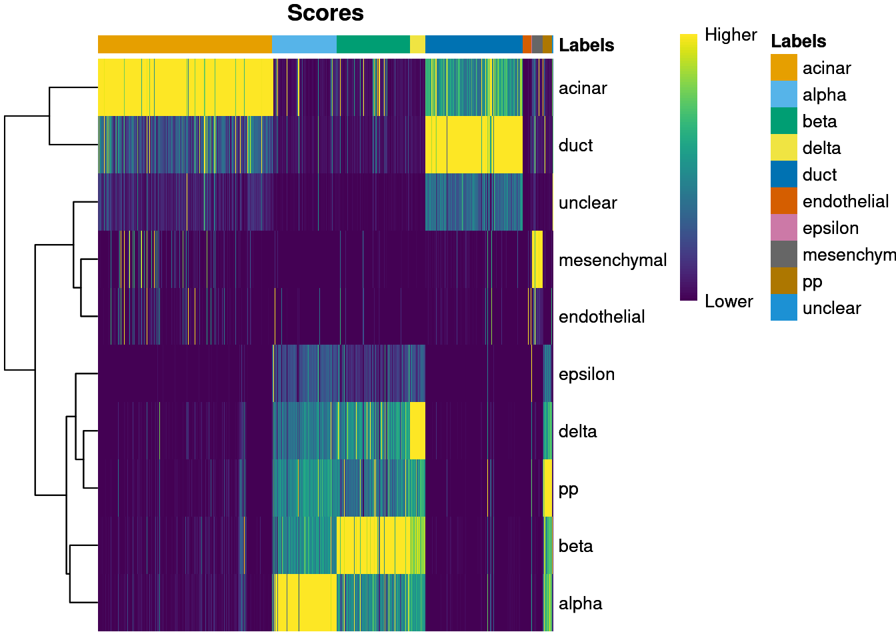
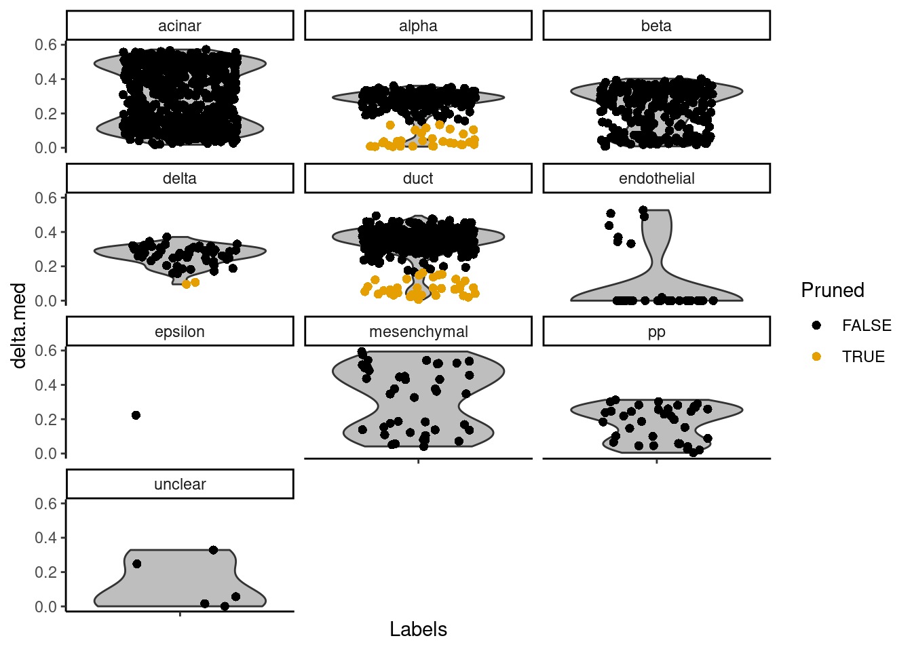
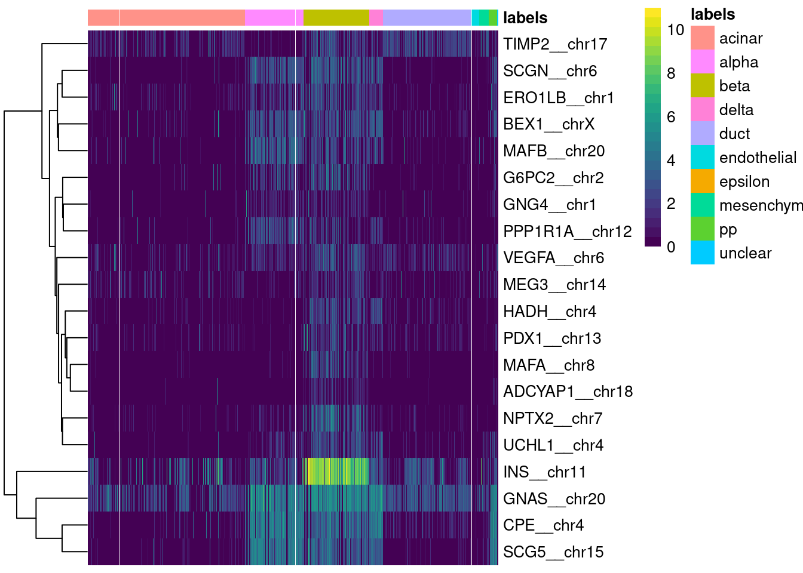

Last updated: 2025-03-03
Checks: 7 0
Knit directory: muse/
This reproducible R Markdown analysis was created with workflowr (version 1.7.1). The Checks tab describes the reproducibility checks that were applied when the results were created. The Past versions tab lists the development history.
Great! Since the R Markdown file has been committed to the Git repository, you know the exact version of the code that produced these results.
Great job! The global environment was empty. Objects defined in the global environment can affect the analysis in your R Markdown file in unknown ways. For reproduciblity it’s best to always run the code in an empty environment.
The command set.seed(20200712) was run prior to running
the code in the R Markdown file. Setting a seed ensures that any results
that rely on randomness, e.g. subsampling or permutations, are
reproducible.
Great job! Recording the operating system, R version, and package versions is critical for reproducibility.
Nice! There were no cached chunks for this analysis, so you can be confident that you successfully produced the results during this run.
Great job! Using relative paths to the files within your workflowr project makes it easier to run your code on other machines.
Great! You are using Git for version control. Tracking code development and connecting the code version to the results is critical for reproducibility.
The results in this page were generated with repository version 35706ef. See the Past versions tab to see a history of the changes made to the R Markdown and HTML files.
Note that you need to be careful to ensure that all relevant files for
the analysis have been committed to Git prior to generating the results
(you can use wflow_publish or
wflow_git_commit). workflowr only checks the R Markdown
file, but you know if there are other scripts or data files that it
depends on. Below is the status of the Git repository when the results
were generated:
Ignored files:
Ignored: .Rproj.user/
Ignored: data/1M_neurons_filtered_gene_bc_matrices_h5.h5
Ignored: data/293t/
Ignored: data/293t_3t3_filtered_gene_bc_matrices.tar.gz
Ignored: data/293t_filtered_gene_bc_matrices.tar.gz
Ignored: data/5k_Human_Donor1_PBMC_3p_gem-x_5k_Human_Donor1_PBMC_3p_gem-x_count_sample_filtered_feature_bc_matrix.h5
Ignored: data/5k_Human_Donor2_PBMC_3p_gem-x_5k_Human_Donor2_PBMC_3p_gem-x_count_sample_filtered_feature_bc_matrix.h5
Ignored: data/5k_Human_Donor3_PBMC_3p_gem-x_5k_Human_Donor3_PBMC_3p_gem-x_count_sample_filtered_feature_bc_matrix.h5
Ignored: data/5k_Human_Donor4_PBMC_3p_gem-x_5k_Human_Donor4_PBMC_3p_gem-x_count_sample_filtered_feature_bc_matrix.h5
Ignored: data/Parent_SC3v3_Human_Glioblastoma_filtered_feature_bc_matrix.tar.gz
Ignored: data/brain_counts/
Ignored: data/cl.obo
Ignored: data/cl.owl
Ignored: data/jurkat/
Ignored: data/jurkat:293t_50:50_filtered_gene_bc_matrices.tar.gz
Ignored: data/jurkat_293t/
Ignored: data/jurkat_filtered_gene_bc_matrices.tar.gz
Ignored: data/pbmc20k/
Ignored: data/pbmc20k_seurat/
Ignored: data/pbmc3k/
Ignored: data/pbmc4k_filtered_gene_bc_matrices.tar.gz
Ignored: data/refdata-gex-GRCh38-2020-A.tar.gz
Ignored: data/seurat_1m_neuron.rds
Ignored: data/t_3k_filtered_gene_bc_matrices.tar.gz
Ignored: r_packages_4.4.1/
Untracked files:
Untracked: analysis/bioc_scrnaseq.Rmd
Note that any generated files, e.g. HTML, png, CSS, etc., are not included in this status report because it is ok for generated content to have uncommitted changes.
These are the previous versions of the repository in which changes were
made to the R Markdown (analysis/singler.Rmd) and HTML
(docs/singler.html) files. If you’ve configured a remote
Git repository (see ?wflow_git_remote), click on the
hyperlinks in the table below to view the files as they were in that
past version.
| File | Version | Author | Date | Message |
|---|---|---|---|---|
| Rmd | 35706ef | Dave Tang | 2025-03-03 | Self annotate pbmc3k set |
| html | e624270 | Dave Tang | 2025-03-03 | Build site. |
| Rmd | 49a8023 | Dave Tang | 2025-03-03 | Fix subsetting |
| html | 359326f | Dave Tang | 2025-02-26 | Build site. |
| Rmd | 8a3ad8c | Dave Tang | 2025-02-26 | pbmc3k |
| html | 5c7a2ba | Dave Tang | 2025-02-26 | Build site. |
| Rmd | 690145c | Dave Tang | 2025-02-26 | Using single-cell references |
| html | aeeb294 | Dave Tang | 2025-02-14 | Build site. |
| Rmd | e6f0a05 | Dave Tang | 2025-02-14 | Using SingleR |
Performs unbiased cell type recognition from single-cell RNA sequencing data, by leveraging reference transcriptomic datasets of pure cell types to infer the cell of origin of each single cell independently.
Install SingleR.
if (!require("BiocManager", quietly = TRUE))
install.packages("BiocManager")
BiocManager::install("SingleR")
BiocManager::install("scRNAseq")
BiocManager::install("scuttle")
BiocManager::install("scran")
install.packages("viridis")
install.packages("pheatmap")Following Using SingleR to annotate single-cell RNA-seq data.
SingleR is an automatic annotation method for single-cell RNA sequencing (scRNAseq) data (Aran et al. 2019). Given a reference dataset of samples (single-cell or bulk) with known labels, it labels new cells from a test dataset based on similarity to the reference. Thus, the burden of manually interpreting clusters and defining marker genes only has to be done once, for the reference dataset, and this biological knowledge can be propagated to new datasets in an automated manner.
The easiest way to use SingleR is to annotate cells against built-in references. In particular, the celldex package provides access to several reference datasets (mostly derived from bulk RNA-seq or microarray data) through dedicated retrieval functions. Here, we will use the Human Primary Cell Atlas (Mabbott et al. 2013), represented as a SummarizedExperiment object containing a matrix of log-expression values with sample-level labels.
suppressPackageStartupMessages(library(celldex))
hpca.se <- HumanPrimaryCellAtlasData()
hpca.seclass: SummarizedExperiment
dim: 19363 713
metadata(0):
assays(1): logcounts
rownames(19363): A1BG A1BG-AS1 ... ZZEF1 ZZZ3
rowData names(0):
colnames(713): GSM112490 GSM112491 ... GSM92233 GSM92234
colData names(3): label.main label.fine label.ontOur test dataset consists of some human embryonic stem cells (La Manno et al. 2016) from the scRNAseq package. For the sake of speed, we will only label the first 100 cells from this dataset.
suppressPackageStartupMessages(library(scRNAseq))
hESCs <- LaMannoBrainData('human-es')
hESCs <- hESCs[,1:100]We use our hpca.se reference to annotate each cell in hESCs via the SingleR() function. This identifies marker genes from the reference and uses them to compute assignment scores (based on the Spearman correlation across markers) for each cell in the test dataset against each label in the reference. The label with the highest score is the assigned to the test cell, possibly with further fine-tuning to resolve closely related labels.
suppressPackageStartupMessages(library(SingleR))
pred.hesc <- SingleR(
test = hESCs,
ref = hpca.se,
assay.type.test=1,
labels = hpca.se$label.main
)Each row of the output DataFrame contains prediction results for a single cell. Labels are shown before (labels) and after pruning (pruned.labels), along with the associated scores.
pred.hescDataFrame with 100 rows and 4 columns
scores labels delta.next
<matrix> <character> <numeric>
1772122_301_C02 0.347652:0.139036:0.109547:... Neuroepithelial_cell 0.08332864
1772122_180_E05 0.361187:0.155395:0.134934:... Neurons 0.07283500
1772122_300_H02 0.446411:0.218052:0.190084:... Neuroepithelial_cell 0.13882912
1772122_180_B09 0.373512:0.172438:0.143537:... Neuroepithelial_cell 0.00317443
1772122_180_G04 0.357341:0.157275:0.126511:... Neuroepithelial_cell 0.09717938
... ... ... ...
1772122_299_E07 0.371989:0.202363:0.169379:... Neuroepithelial_cell 0.0837521
1772122_180_D02 0.353314:0.146049:0.115864:... Neuroepithelial_cell 0.0842804
1772122_300_D09 0.348789:0.129193:0.136732:... Neuroepithelial_cell 0.0595056
1772122_298_F09 0.332361:0.173357:0.141439:... Neuroepithelial_cell 0.1200606
1772122_302_A11 0.324928:0.127518:0.101609:... Astrocyte 0.0509478
pruned.labels
<character>
1772122_301_C02 Neuroepithelial_cell
1772122_180_E05 Neurons
1772122_300_H02 Neuroepithelial_cell
1772122_180_B09 Neuroepithelial_cell
1772122_180_G04 Neuroepithelial_cell
... ...
1772122_299_E07 Neuroepithelial_cell
1772122_180_D02 Neuroepithelial_cell
1772122_300_D09 Neuroepithelial_cell
1772122_298_F09 Neuroepithelial_cell
1772122_302_A11 AstrocyteSingleR is workflow/package agnostic. The above example uses
SummarizedExperiment objects, but the same functions will
accept any (log-)normalized expression matrix.
Here, we will use two human pancreas datasets from the scRNAseq package. The aim is to use one pre-labelled dataset to annotate the other unlabelled dataset. First, we set up the Muraro et al. (2016) dataset to be our reference.
suppressPackageStartupMessages(library(scuttle))
sceM <- MuraroPancreasData()
# One should normally do cell-based quality control at this point, but for
# brevity's sake, we will just remove the unlabelled libraries here.
sceM <- sceM[,!is.na(sceM$label)]
# SingleR() expects reference datasets to be normalized and log-transformed.
sceM <- logNormCounts(sceM)
sceMclass: SingleCellExperiment
dim: 19059 2126
metadata(0):
assays(2): counts logcounts
rownames(19059): A1BG-AS1__chr19 A1BG__chr19 ... ZZEF1__chr17
ZZZ3__chr1
rowData names(2): symbol chr
colnames(2126): D28-1_1 D28-1_2 ... D30-8_93 D30-8_94
colData names(4): label donor plate sizeFactor
reducedDimNames(0):
mainExpName: endogenous
altExpNames(1): ERCCLabel tally.
table(colData(sceM)$label)
acinar alpha beta delta duct endothelial
219 812 448 193 245 21
epsilon mesenchymal pp unclear
3 80 101 4 We then set up our test dataset from Grun et al. (2016).
sceG <- GrunPancreasData()
sceG <- sceG[,colSums(counts(sceG)) > 0] # Remove libraries with no counts.
sceG <- logNormCounts(sceG)
sceGclass: SingleCellExperiment
dim: 20064 1718
metadata(0):
assays(2): counts logcounts
rownames(20064): A1BG-AS1__chr19 A1BG__chr19 ... ZZEF1__chr17
ZZZ3__chr1
rowData names(2): symbol chr
colnames(1718): D2ex_1 D2ex_2 ... D17TGFB_95 D17TGFB_96
colData names(3): donor sample sizeFactor
reducedDimNames(0):
mainExpName: endogenous
altExpNames(1): ERCCWe then run SingleR() as described previously but with a marker detection mode that considers the variance of expression across cells. Here, we will use the Wilcoxon ranked sum test to identify the top markers for each pairwise comparison between labels. This is slower but more appropriate for single-cell data compared to the default marker detection algorithm (which may fail for low-coverage data where the median is frequently zero).
pred.grun <- SingleR(
test=sceG,
ref=sceM,
labels=sceM$label,
de.method="wilcox"
)
table(pred.grun$labels)
acinar alpha beta delta duct endothelial
657 245 276 57 367 34
epsilon mesenchymal pp unclear
1 41 35 5 plotScoreHeatmap() displays the scores for all cells
across all reference labels, which allows users to inspect the
confidence of the predicted labels across the dataset. Ideally, each
cell (i.e., column of the heatmap) should have one score that is
obviously larger than the rest, indicating that it is unambiguously
assigned to a single label. A spread of similar scores for a given cell
indicates that the assignment is uncertain, though this may be
acceptable if the uncertainty is distributed across similar cell types
that cannot be easily resolved.
plotScoreHeatmap(pred.grun)
| Version | Author | Date |
|---|---|---|
| aeeb294 | Dave Tang | 2025-02-14 |
Another diagnostic is based on the per-cell “deltas”, i.e., the difference between the score for the assigned label and the median across all labels for each cell. Low deltas indicate that the assignment is uncertain, which is especially relevant if the cell’s true label does not exist in the reference. We can inspect these deltas across cells for each label using the plotDeltaDistribution() function.
plotDeltaDistribution(pred.grun, ncol = 3)Warning: Groups with fewer than two datapoints have been dropped.
ℹ Set `drop = FALSE` to consider such groups for position adjustment purposes.Warning in max(data$density, na.rm = TRUE): no non-missing arguments to max;
returning -InfWarning: Computation failed in `stat_ydensity()`.
Caused by error in `$<-.data.frame`:
! replacement has 1 row, data has 0
| Version | Author | Date |
|---|---|---|
| aeeb294 | Dave Tang | 2025-02-14 |
The pruneScores() function will remove potentially
poor-quality or ambiguous assignments based on the deltas. The minimum
threshold on the deltas is defined using an outlier-based approach that
accounts for differences in the scale of the correlations in various
contexts - see ?pruneScores for more details. SingleR() will also report
the pruned scores automatically in the pruned.labels field where
low-quality assignments are replaced with NA.
summary(is.na(pred.grun$pruned.labels)) Mode FALSE TRUE
logical 1651 67 Finally, a simple yet effective diagnostic is to examine the expression of the marker genes for each label in the test dataset. We extract the identity of the markers from the metadata of the SingleR() results and use them in the plotMarkerHeatmap() function, as shown below for beta cell markers. If a cell in the test dataset is confidently assigned to a particular label, we would expect it to have strong expression of that label’s markers. At the very least, it should exhibit upregulation of those markers relative to cells assigned to other labels.
plotMarkerHeatmap(pred.grun, sceG, label="beta")
| Version | Author | Date |
|---|---|---|
| aeeb294 | Dave Tang | 2025-02-14 |
pbmc3k.
suppressPackageStartupMessages(library(Seurat))
pbmc.data <- Read10X(data.dir = "data/pbmc3k/filtered_gene_bc_matrices/hg19/")
pbmc3k <- CreateSeuratObject(
counts = pbmc.data,
min.cells = 3,
min.features = 200,
project = "pbmc3k"
)Warning: Feature names cannot have underscores ('_'), replacing with dashes
('-')pbmc3k <- NormalizeData(pbmc3k)Normalizing layer: countsUse Monaco.
suppressPackageStartupMessages(library(celldex))
monaco_immune <- fetchReference("monaco_immune", "2024-02-26")
monaco_immuneclass: SummarizedExperiment
dim: 46077 114
metadata(0):
assays(1): logcounts
rownames(46077): A1BG A1BG-AS1 ... ZYX ZZEF1
rowData names(0):
colnames(114): DZQV_CD8_naive DZQV_CD8_CM ... G4YW_Neutrophils
G4YW_Basophils
colData names(3): label.main label.fine label.ontAnnotate.
pbmc3k.anno <- SingleR(
test=pbmc3k@assays$RNA$data,
ref=monaco_immune,
labels=colData(monaco_immune)$label.main
)
cbind(
pbmc3k@meta.data,
as.data.frame(pbmc3k.anno)
) -> pbmc3k@meta.data
head(pbmc3k@meta.data) orig.ident nCount_RNA nFeature_RNA scores.B.cells
AAACATACAACCAC-1 pbmc3k 2419 779 0.2180441
AAACATTGAGCTAC-1 pbmc3k 4903 1352 0.3757485
AAACATTGATCAGC-1 pbmc3k 3147 1129 0.2021054
AAACCGTGCTTCCG-1 pbmc3k 2639 960 0.2612174
AAACCGTGTATGCG-1 pbmc3k 980 521 0.1354756
AAACGCACTGGTAC-1 pbmc3k 2163 781 0.2428544
scores.Basophils scores.CD4..T.cells scores.CD8..T.cells
AAACATACAACCAC-1 0.1383833 0.3191626 0.3271229
AAACATTGAGCTAC-1 0.1595869 0.2226758 0.2314824
AAACATTGATCAGC-1 0.1398993 0.3603814 0.3381419
AAACCGTGCTTCCG-1 0.1925995 0.1409225 0.1433708
AAACCGTGTATGCG-1 0.1062113 0.1834073 0.2328461
AAACGCACTGGTAC-1 0.1773750 0.3236777 0.3062542
scores.Dendritic.cells scores.Monocytes scores.Neutrophils
AAACATACAACCAC-1 0.1813302 0.1823273 0.10993201
AAACATTGAGCTAC-1 0.2636019 0.2165097 0.12052022
AAACATTGATCAGC-1 0.1654294 0.1732526 0.12294480
AAACCGTGCTTCCG-1 0.3438019 0.3694793 0.23698599
AAACCGTGTATGCG-1 0.1082860 0.1210741 0.07931607
AAACGCACTGGTAC-1 0.2057659 0.2115375 0.10881833
scores.NK.cells scores.Progenitors scores.T.cells labels
AAACATACAACCAC-1 0.2818949 0.2027839 0.3311532 T cells
AAACATTGAGCTAC-1 0.2137517 0.2441976 0.2270059 B cells
AAACATTGATCAGC-1 0.2701806 0.1943829 0.3374040 CD4+ T cells
AAACCGTGCTTCCG-1 0.1803712 0.2258147 0.1466077 Monocytes
AAACCGTGTATGCG-1 0.2725055 0.1577020 0.2524348 NK cells
AAACGCACTGGTAC-1 0.2690438 0.2098472 0.3002346 CD4+ T cells
delta.next pruned.labels
AAACATACAACCAC-1 0.0009944445 T cells
AAACATTGAGCTAC-1 0.1121465835 B cells
AAACATTGATCAGC-1 0.0850874976 CD4+ T cells
AAACCGTGCTTCCG-1 0.1135955003 Monocytes
AAACCGTGTATGCG-1 0.0623907247 NK cells
AAACGCACTGGTAC-1 0.0574108543 CD4+ T cellsSplit in half.
total <- nrow(pbmc3k@meta.data)
half <- floor(total / 2)
first_half <- row.names(pbmc3k@meta.data)[1:half]
second_half <- row.names(pbmc3k@meta.data)[(half+1):total]Create reference.
sce_ref <- SingleCellExperiment(
assays = list(counts = pbmc3k@assays$RNA$counts[, first_half])
)
colLabels(sce_ref) <- pbmc3k@meta.data[first_half, 'labels']
sce_ref <- logNormCounts(sce_ref)
sce_refclass: SingleCellExperiment
dim: 13714 1350
metadata(0):
assays(2): counts logcounts
rownames(13714): AL627309.1 AP006222.2 ... PNRC2.1 SRSF10.1
rowData names(0):
colnames(1350): AAACATACAACCAC-1 AAACATTGAGCTAC-1 ... CTATAGCTTCGCTC-1
CTATAGCTTGCCTC-1
colData names(2): label sizeFactor
reducedDimNames(0):
mainExpName: NULL
altExpNames(0):Create query.
sce_query <- SingleCellExperiment(
assays = list(counts = pbmc3k@assays$RNA$counts[, second_half])
)
sce_query <- logNormCounts(sce_query)
sce_queryclass: SingleCellExperiment
dim: 13714 1350
metadata(0):
assays(2): counts logcounts
rownames(13714): AL627309.1 AP006222.2 ... PNRC2.1 SRSF10.1
rowData names(0):
colnames(1350): CTATCAACGAACTC-1 CTATCAACGCAGAG-1 ... TTTGCATGAGAGGC-1
TTTGCATGCCTCAC-1
colData names(1): sizeFactor
reducedDimNames(0):
mainExpName: NULL
altExpNames(0):Annotate.
sce.pred <- SingleR(
test=sce_query,
ref=sce_ref,
labels=sce_ref$label,
de.method="wilcox"
)
table(sce_ref$label)
B cells CD4+ T cells CD8+ T cells Dendritic cells Monocytes
179 455 160 23 317
NK cells Progenitors T cells
87 6 123 table(sce.pred$labels)
B cells CD4+ T cells CD8+ T cells Dendritic cells Monocytes
175 508 126 34 312
NK cells Progenitors T cells
72 9 114 Self annotate.
pbmc3k_ref <- SingleCellExperiment(
assays = list(counts = pbmc3k@assays$RNA$counts)
)
colLabels(pbmc3k_ref) <- pbmc3k@meta.data$labels
pbmc3k_ref <- logNormCounts(pbmc3k_ref)
pbmc3k_query <- SingleCellExperiment(
assays = list(counts = pbmc3k@assays$RNA$counts)
)
pbmc3k_query <- logNormCounts(pbmc3k_query)
pbmc3k.self.pred <- SingleR(
test=pbmc3k_query,
ref=pbmc3k_ref,
labels=pbmc3k_ref$label,
de.method="wilcox"
)
stopifnot(all(row.names(pbmc3k.self.pred) == row.names(pbmc3k@meta.data)))
table(
pbmc3k@meta.data$labels,
pbmc3k.self.pred$labels
)
B cells CD4+ T cells CD8+ T cells Dendritic cells Monocytes
B cells 351 1 0 0 3
CD4+ T cells 1 892 12 0 0
CD8+ T cells 0 62 171 0 0
Dendritic cells 1 0 0 31 13
Monocytes 0 1 0 2 638
NK cells 0 1 3 0 0
Progenitors 0 2 0 1 0
T cells 1 54 17 0 0
NK cells Progenitors T cells
B cells 0 0 0
CD4+ T cells 0 0 6
CD8+ T cells 1 0 80
Dendritic cells 0 0 0
Monocytes 0 0 0
NK cells 147 0 14
Progenitors 0 12 0
T cells 2 0 180
sessionInfo()R version 4.4.1 (2024-06-14)
Platform: x86_64-pc-linux-gnu
Running under: Ubuntu 22.04.5 LTS
Matrix products: default
BLAS: /usr/lib/x86_64-linux-gnu/openblas-pthread/libblas.so.3
LAPACK: /usr/lib/x86_64-linux-gnu/openblas-pthread/libopenblasp-r0.3.20.so; LAPACK version 3.10.0
locale:
[1] LC_CTYPE=en_US.UTF-8 LC_NUMERIC=C
[3] LC_TIME=en_US.UTF-8 LC_COLLATE=en_US.UTF-8
[5] LC_MONETARY=en_US.UTF-8 LC_MESSAGES=en_US.UTF-8
[7] LC_PAPER=en_US.UTF-8 LC_NAME=C
[9] LC_ADDRESS=C LC_TELEPHONE=C
[11] LC_MEASUREMENT=en_US.UTF-8 LC_IDENTIFICATION=C
time zone: Etc/UTC
tzcode source: system (glibc)
attached base packages:
[1] stats4 stats graphics grDevices utils datasets methods
[8] base
other attached packages:
[1] Seurat_5.1.0 SeuratObject_5.0.2
[3] sp_2.1-4 scuttle_1.16.0
[5] SingleR_2.8.0 scRNAseq_2.20.0
[7] SingleCellExperiment_1.28.1 celldex_1.16.0
[9] SummarizedExperiment_1.36.0 Biobase_2.66.0
[11] GenomicRanges_1.58.0 GenomeInfoDb_1.42.3
[13] IRanges_2.40.1 S4Vectors_0.44.0
[15] BiocGenerics_0.52.0 MatrixGenerics_1.18.1
[17] matrixStats_1.4.1 workflowr_1.7.1
loaded via a namespace (and not attached):
[1] spatstat.sparse_3.1-0 fs_1.6.4
[3] ProtGenerics_1.38.0 bitops_1.0-9
[5] httr_1.4.7 RColorBrewer_1.1-3
[7] sctransform_0.4.1 tools_4.4.1
[9] alabaster.base_1.6.1 utf8_1.2.4
[11] R6_2.5.1 HDF5Array_1.34.0
[13] uwot_0.2.2 lazyeval_0.2.2
[15] rhdf5filters_1.18.0 withr_3.0.2
[17] gridExtra_2.3 progressr_0.15.0
[19] cli_3.6.3 spatstat.explore_3.3-3
[21] fastDummies_1.7.4 alabaster.se_1.6.0
[23] labeling_0.4.3 sass_0.4.9
[25] spatstat.data_3.1-2 ggridges_0.5.6
[27] pbapply_1.7-2 Rsamtools_2.22.0
[29] R.utils_2.12.3 parallelly_1.38.0
[31] limma_3.62.2 rstudioapi_0.17.1
[33] RSQLite_2.3.7 generics_0.1.3
[35] BiocIO_1.16.0 spatstat.random_3.3-2
[37] ica_1.0-3 dplyr_1.1.4
[39] Matrix_1.7-0 fansi_1.0.6
[41] abind_1.4-8 R.methodsS3_1.8.2
[43] lifecycle_1.0.4 whisker_0.4.1
[45] yaml_2.3.10 edgeR_4.4.2
[47] rhdf5_2.50.2 SparseArray_1.6.1
[49] BiocFileCache_2.14.0 Rtsne_0.17
[51] grid_4.4.1 blob_1.2.4
[53] promises_1.3.0 dqrng_0.4.1
[55] ExperimentHub_2.14.0 crayon_1.5.3
[57] miniUI_0.1.1.1 lattice_0.22-6
[59] beachmat_2.22.0 cowplot_1.1.3
[61] GenomicFeatures_1.58.0 KEGGREST_1.46.0
[63] pillar_1.9.0 knitr_1.48
[65] metapod_1.14.0 rjson_0.2.23
[67] future.apply_1.11.3 codetools_0.2-20
[69] leiden_0.4.3.1 glue_1.8.0
[71] getPass_0.2-4 spatstat.univar_3.0-1
[73] data.table_1.16.2 vctrs_0.6.5
[75] png_0.1-8 gypsum_1.2.0
[77] spam_2.11-0 gtable_0.3.6
[79] cachem_1.1.0 xfun_0.48
[81] S4Arrays_1.6.0 mime_0.12
[83] survival_3.6-4 pheatmap_1.0.12
[85] statmod_1.5.0 bluster_1.16.0
[87] fitdistrplus_1.2-1 ROCR_1.0-11
[89] nlme_3.1-164 bit64_4.5.2
[91] alabaster.ranges_1.6.0 filelock_1.0.3
[93] RcppAnnoy_0.0.22 rprojroot_2.0.4
[95] bslib_0.8.0 irlba_2.3.5.1
[97] KernSmooth_2.23-24 colorspace_2.1-1
[99] DBI_1.2.3 tidyselect_1.2.1
[101] processx_3.8.4 bit_4.5.0
[103] compiler_4.4.1 curl_5.2.3
[105] git2r_0.35.0 httr2_1.0.5
[107] BiocNeighbors_2.0.1 DelayedArray_0.32.0
[109] plotly_4.10.4 rtracklayer_1.66.0
[111] scales_1.3.0 lmtest_0.9-40
[113] callr_3.7.6 rappdirs_0.3.3
[115] goftest_1.2-3 stringr_1.5.1
[117] digest_0.6.37 spatstat.utils_3.1-0
[119] alabaster.matrix_1.6.1 rmarkdown_2.28
[121] XVector_0.46.0 htmltools_0.5.8.1
[123] pkgconfig_2.0.3 sparseMatrixStats_1.18.0
[125] highr_0.11 dbplyr_2.5.0
[127] fastmap_1.2.0 ensembldb_2.30.0
[129] htmlwidgets_1.6.4 rlang_1.1.4
[131] UCSC.utils_1.2.0 shiny_1.9.1
[133] DelayedMatrixStats_1.28.1 farver_2.1.2
[135] jquerylib_0.1.4 zoo_1.8-12
[137] jsonlite_1.8.9 BiocParallel_1.40.0
[139] R.oo_1.26.0 BiocSingular_1.22.0
[141] RCurl_1.98-1.16 magrittr_2.0.3
[143] GenomeInfoDbData_1.2.13 dotCall64_1.2
[145] patchwork_1.3.0 Rhdf5lib_1.28.0
[147] munsell_0.5.1 Rcpp_1.0.13
[149] viridis_0.6.5 reticulate_1.39.0
[151] stringi_1.8.4 alabaster.schemas_1.6.0
[153] zlibbioc_1.52.0 MASS_7.3-60.2
[155] plyr_1.8.9 AnnotationHub_3.14.0
[157] parallel_4.4.1 listenv_0.9.1
[159] ggrepel_0.9.6 deldir_2.0-4
[161] Biostrings_2.74.1 splines_4.4.1
[163] tensor_1.5 locfit_1.5-9.10
[165] ps_1.8.1 igraph_2.1.1
[167] spatstat.geom_3.3-3 RcppHNSW_0.6.0
[169] reshape2_1.4.4 ScaledMatrix_1.14.0
[171] BiocVersion_3.20.0 XML_3.99-0.17
[173] evaluate_1.0.1 scran_1.34.0
[175] BiocManager_1.30.25 httpuv_1.6.15
[177] polyclip_1.10-7 tidyr_1.3.1
[179] purrr_1.0.2 RANN_2.6.2
[181] scattermore_1.2 future_1.34.0
[183] alabaster.sce_1.6.0 ggplot2_3.5.1
[185] rsvd_1.0.5 xtable_1.8-4
[187] restfulr_0.0.15 AnnotationFilter_1.30.0
[189] RSpectra_0.16-2 later_1.3.2
[191] viridisLite_0.4.2 tibble_3.2.1
[193] memoise_2.0.1 AnnotationDbi_1.68.0
[195] GenomicAlignments_1.42.0 cluster_2.1.6
[197] globals_0.16.3